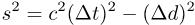
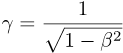
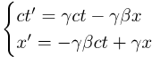
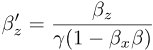

When used as a velocity along some axis, then β will also have a sign, either positive or negative.
The speed is usually expressed as a fraction of the speed limit:
When used as a velocity along some axis, then β will also have a sign, either positive or negative.
The square of the space-time interval between any pair of events, with Δd for the distance:

The warp factor (or Lorentz factor) for time dilation and other effects:

The boost transformation (or Lorentz transformation), relating event coordinates in one grid (unprimed), to a second
boosted grid (primed), moving along the x axis at speed β (-1<β<1) with respect to the first:

If y and z dimensions are included:

Boost for velocity, with each component of the speed expressed (as usual) as a fraction
of the speed limit:

The Doppler factor, with θ as the angle between the line-of-sight and the line-of-motion.

The Doppler neutral angle, where D=1:
The aberration of light:

In this diagram explaining the geometry, D is the detector-direction, P is the photon-direction:
The apparent velocity of an object, as seen in a detector.
The angle θ is between 0° and 180°.
It's the angle between the line of sight and the object's direction of motion.
There are two components, transverse (t) and radial (r).
For galaxies, astronomers usually prefer to separate the motion into two parts:
The change in apparent magnitude of a star, approximated with a blackbody spectrum of temperature T expressed in kelvins (McKinley, Doherty 1979):